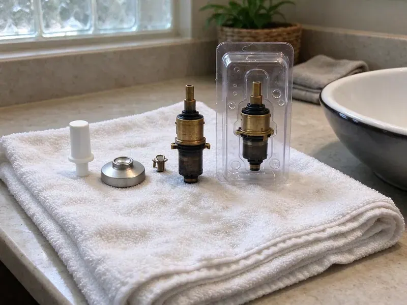

Sink Drain Replacement in Parker, CO
Is your sink drain failing in Parker, CO? GFR Plumbing offers prompt and efficient replacement services to restore your kitchen or bathroom plumbing.
- Same-Day Drain Replacement
- Guaranteed Work
- Quality Parts
- Finish-Matched Drain Assemblies
Reliable Sink Drain Replacement Services in Parker, CO.
Don't let a failing sink drain disrupt your home. Contact GFR Plumbing for professional replacement.
Professional Sink Drain Replacement in Parker, CO
GFR Plumbing replaces the full drain path under a bathroom sink, including the flange, pop-up body, tailpiece, P-trap and trap arm. We remove old putty and corroded metal, clean the basin opening, and install new components sized and sealed for your sink. The finished drain holds water when closed and empties fast when open.
Our expertise includes:
- Replace all types of kitchen and bathroom sink drains
- Install all types of P-traps, S-traps, and continuous waste systems.
- Install new drain lines and P-traps

Additional Bathroom Plumbing Services in Parker, CO
From toilets to showers, our bathroom plumbing team in Parker, CO repairs, installs, and replaces every fixture with clean, code-compliant work.


Customers
Why Choose GFR Plumbing for Sink Drain Replacement in Parker, CO?
Choosing GFR Plumbing for your sink drain replacement means choosing peace of mind. We stand for clear communication and a job done right the first time.
- Quality Materials, We use only durable, corrosion-resistant drain components, including PVC, ABS, and brass, designed to stand up to years of daily use.
- Tested Seals, Every drain is filled and run before we pack up.
- Licensed Plumbers, All our technicians are fully licensed, insured, and highly experienced in drain system work.
Citywide Coverage
GFR Plumbing proudly serves every neighborhood in Parker and the surrounding areas. No matter where you are located in Parker, our team is ready to respond quickly to your sink drain replacement needs.
Experienced Team
Each technician at GFR Plumbing is very skilled in diagnosing and repairing complex drain issues. We bring years of practical experience to every sink drain replacement job, delivering a professional and lasting solution.
Safety-First Approach
We strictly follow all local Parker and state plumbing codes during every sink drain replacement. This commitment to compliance protects your home and keeps your plumbing system operating safely and efficiently.
Trusted Certified Parker Plumbing Services Professionals
At GFR Plumbing, we take pride in providing certified plumbing services throughout Parker, CO. Backed by leading industry credentials, our experienced plumbers combine technical skill with genuine customer care. Whether it is repair, installation, or maintenance, we follow strict safety and quality standards to deliver long-lasting results you can trust.
Call Us Now PHCC Plumbing Contractor Recognition
PHCC Plumbing Contractor Recognition Better Business Bureau (BBB) Accreditation
Better Business Bureau (BBB) Accreditation Angi Certified Pro
Angi Certified Pro ISO 9001 Quality Management Certification
ISO 9001 Quality Management CertificationDependable Sink Drain Replacement Services in Parker, CO
Leaking P-Trap Repair & Replacement in Parker
The P-trap is a critical component of any sink drain, preventing sewer gases from entering your home and trapping debris. Leaks in the P-trap are common due to cracks, loose connections, or corrosion. GFR Plumbing offers careful P-trap repair or full replacement services, using high-quality PVC, ABS, or chrome-plated brass traps. We ensure proper sealing and alignment, eliminating leaks and maintaining the sanitary function of your sink drain system throughout Parker.

Push-Button and Click-Clack Drain Installation in Parker, CO
Many homeowners switch to push-button drains to get rid of the lift rod entirely. These drains open and close with a press on the stopper. We confirm your sink has an overflow or choose a non-overflow version, then seal and test it. They are easy to clean and work well with newer faucets.
Vessel and Grid Drain Replacement in Parker
Vessel sinks and many glass basins use grid or umbrella drains without overflow holes. Using the wrong drain can cause slow draining or water spilling through the overflow port. We fit the correct drain type and height for your bowl. We also make sure the tailpiece length matches your vanity.
Corroded Drain Pipe Replacement in Parker, CO
Older homes in Parker often have galvanized steel or cast iron drain pipes that are prone to internal corrosion and rust, leading to leaks and reduced flow. GFR Plumbing focuses on replacing these corroded sections with modern, non-corrosive PVC or ABS piping. Our process involves carefully removing the damaged sections and cleanly tying in new, long-lasting materials, restoring your drain's integrity and preventing future failures. We ensure all connections are secure and leak-proof.
Hard-Water Drain Damage Repair in Parker, CO
Mountain homes in Colorado frequently rely on private wells, which may need treatment for iron, manganese, or natural minerals. Hard water builds scale inside pop-up bodies and on stopper rods, and over time this freezes the mechanism or snaps the pivot rod. We remove scaled parts and install new drains with smoother materials that resist buildup. We can also suggest softening options to protect the new parts.
Bathroom Sink Drain Replacement in Parker, CO
Bathroom sink drains can suffer from hair, soap scum, and mineral deposits, leading to slow drainage or total blockages. GFR Plumbing offers expert bathroom sink drain replacement, including pop-up assemblies, P-traps, and wall drains. We handle various fixture styles, from pedestal sinks to vanity sinks, ensuring a clean, leak-free installation. We also check for proper venting and inspect connecting pipes to support long-term performance and prevent foul odors from entering your Parker home.
Drain Replacement vs Drain Repair Costs in Parker, CO
Replacing a single gasket or slip nut costs less up front, but on an older drain the next part often fails within months. A complete drain replacement usually costs only modestly more and resets the clock. We explain both options and the price of each. Most customers choose replacement once they see the condition of the old parts.

Emergency Sink Drain Services in Parker
A sudden, severe sink drain leak or complete blockage can be an emergency, causing water damage or leaving a sink unusable. GFR Plumbing offers emergency sink drain replacement and repair services to address critical issues quickly. Our team is equipped to respond quickly to your call in Parker, diagnosing the problem and performing necessary replacements to stop leaks or restore drainage, limiting disruption and potential damage to your home.
Sink Drain Replacement Near Me in Parker, CO
We know how local water and older drain materials behave here, so we can often predict what we will find before we look. That helps us quote accurately. You get a fair price and a drain built to last.
Looking for 'sink drain replacement near me' in Parker, CO? GFR Plumbing is your local plumbing expert. Our team is conveniently located to serve residents throughout the area, providing prompt and efficient service whenever you need it.
GFR Plumbing at a Glance
- Licensed and insured plumbers serving Parker, CO
- 24/7 emergency service with same-day scheduling
- Upfront, flat-rate pricing before work begins
- 4.8-star rated by 750+ Colorado customers
Parker Map
Parker Information
- Population
- 62,743
- Area codes
- 303/720/970
- Service area
- Parker and communities within 40 miles
- Nearby
- Centennial, Castle Rock, Highlands Ranch, Aurora
Mountain homes in Colorado frequently rely on private wells, which may need treatment for iron, manganese, or other minerals. Mineral buildup and corrosion can lead to premature drain failure, so timely sink drain replacement is important in Parker, CO homes.
Expert Services
Trust our professionals for reliable GFR Plumbing solutions in Parker, CO.
Our Specialized Plumbing Services in Parker, CO
At GFR Plumbing, we provide a complete range of plumbing services across Parker, CO. From leak detection to full system installations, our team ensures fast, precise, and affordable service for both residential and commercial properties. Explore our core services below:


How Our Sink Drain Replacement Process Works in Parker, CO
Our systematic approach to sink drain replacement delivers a lasting solution for your Parker home. Here's what you can expect.
Request a Quote
Call (720) 727-9398 and tell us about the leak or drain issue. We set an appointment and give you a price range over the phone.
Remove Old Drain
We disconnect the trap, free the drain body and clean the basin opening. Any damaged wall stub is inspected and fixed if needed.
Install and Verify
We install the new drain, trap and arm, then fill and empty the sink several times. We confirm a tight seal and easy stopper action.
Frequently Asked Questions About Sink Drain Replacement in Parker
The cost for sink drain replacement in Parker, CO typically ranges from $150 to $600. This depends on factors like the specific drain part needing replacement (for example, a P-trap, tailpiece, or full assembly), the type of sink, and labor involved. We provide transparent, upfront pricing after a thorough assessment.
While some minor drain repairs might seem DIY-friendly, replacing an entire sink drain assembly takes specific tools, knowledge of plumbing codes, and careful sealing to prevent leaks. Improper installation can lead to significant water damage or recurring issues. We recommend hiring a professional from GFR Plumbing for a reliable and code-compliant replacement.
Key signs include persistent leaks under the sink, visible corrosion or rust on the drain pipes, frequent and recurring clogs despite snaking, slow drainage that doesn't improve with cleaning, or a broken drain stopper assembly. A strong sewer gas smell could also indicate a cracked or improperly vented drain.
PVC is affordable, corrosion-proof and a great fit inside a vanity. Brass looks better on exposed pedestal or wall-mount sinks but costs more.
Most drain replacements take about an hour. Jobs involving the wall stub or a seized drain body can take two hours.
Common materials for sink drains include PVC (polyvinyl chloride) and ABS (acrylonitrile butadiene styrene) plastic, which are durable and corrosion-resistant. For visible components like pop-up assemblies, you might find chrome-plated brass or stainless steel. We'll discuss the best material options for your particular sink and usage.
Mountain homes in Colorado frequently rely on private wells, which may need treatment for iron, manganese, or other minerals. Hard water can contribute to mineral buildup inside drain pipes over time, which reduces the internal diameter of the drain and leads to slower drainage and a higher risk of clogs. While it doesn't directly cause a drain to fail, it can worsen existing issues and make replacement more effective than repeated cleaning.
A sewer odor typically means a dry or improperly installed trap, or a venting problem. We check the trap seal and vent when we replace any drain.
What People Are Saying About Our Plumbing Experts?

Mark T.
When our office needed drain cleaning, GFR Plumbing provided quick, reliable service. The plumber arrived on time and made sure every drain flowed perfectly before leaving. Very satisfied.
Drain Cleaning · Highlands Ranch, CO
Patricia H.
We had a slab leak that two other companies could not find. GFR Plumbing located it in under an hour, explained our options, and the price matched the quote to the dollar.
Slab Leak Repair · Castle Rock, CO
Emily R.
I called GFR Plumbing for plumbing repair, and the technician was fast, polite, and thorough. They explained the problem clearly and fixed it the same day. I will definitely hire them again. Highly recommended!
Plumbing Repair · Denver, CO
James P.
Our commercial plumbing system had a leak under the sink, and GFR Plumbing handled it professionally. The plumbers arrived quickly and restored everything without disruption to our customers.
Commercial Plumbing · Denver, CO
Sofia M.
Two new toilets installed in one visit, no mess left behind, and the tech even adjusted a faucet he noticed was dripping. Fair pricing and really friendly.
Toilet Installation · Denver, CORobert G.
The trenchless sewer replacement saved our front yard. They walked us through the camera inspection footage first so we knew exactly what we were paying for.
Sewer Line Replacement · Lakewood, CO